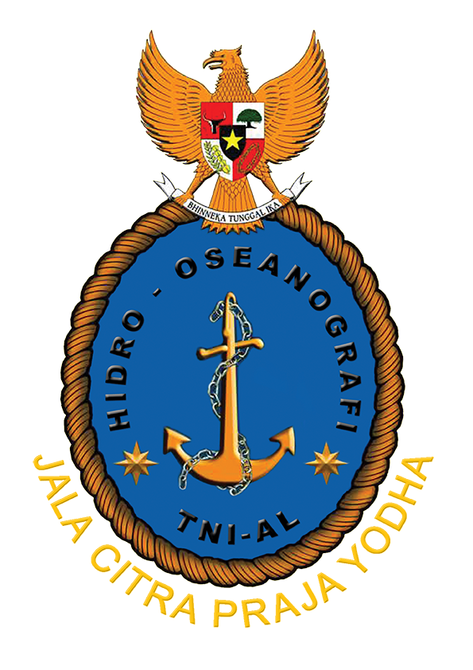
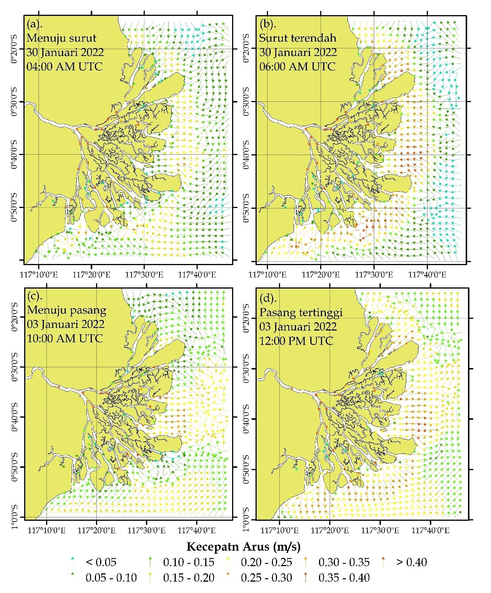
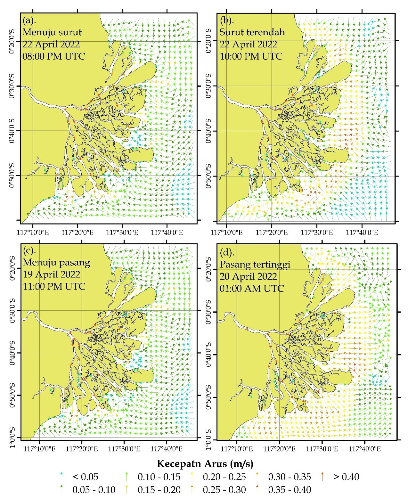
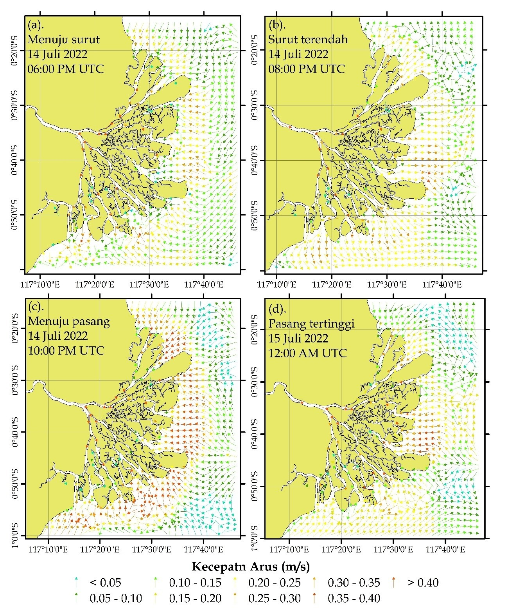
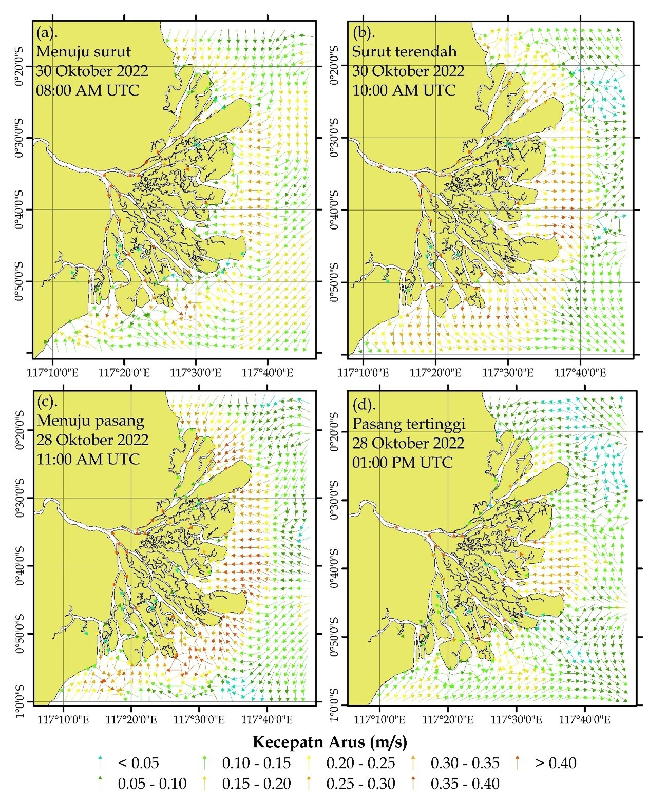
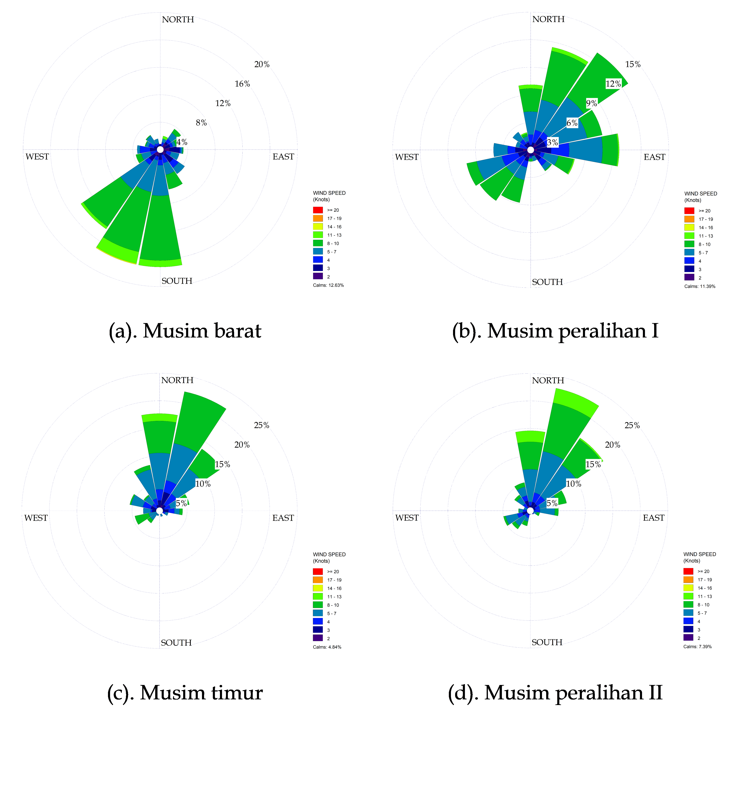
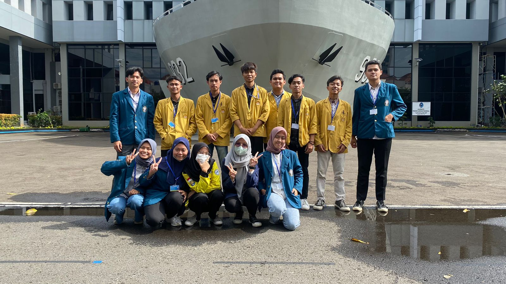
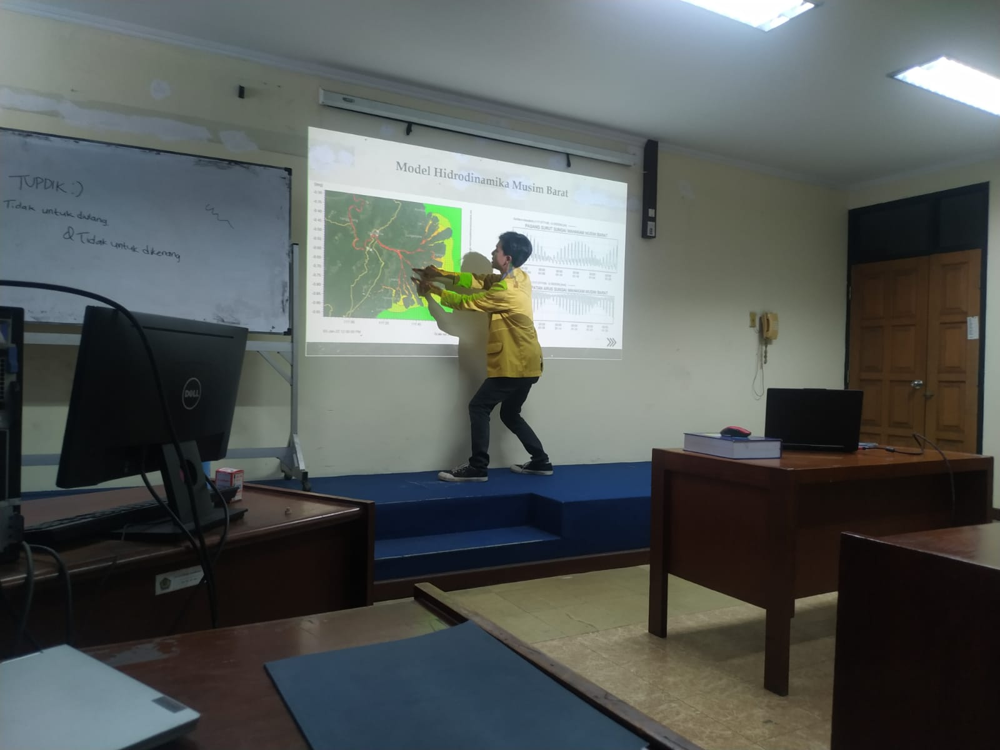

What i did in Pushidrosal

Map of current velocity and direction in the Mahakam River during the West Season.

Map of current velocity and direction in the Mahakam River during the First Transitional Season.

Map of current velocity and direction in the Mahakam River during the East Season.

Map of current velocity and direction in the Mahakam River during the Second Transitional Season.

Wind Rose graphic on Mahakam River during 2022.


Documentation during seminar internship.